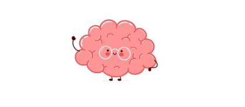
Laurea triennale in
Scienze e
Tecniche Psicologiche
presso l’Università degli Studi di Milano-Bicocca
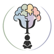
dott.ssa Vittoria Rossoni - psicologaPsicologia dell'età evolutiva · Treviglio
Un luogo in cui comprendere il modo di funzionare di ogni bambino e ragazzo, valorizzarne le risorse e costruire insieme percorsi personalizzati.
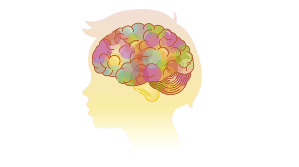
✦· · ·Prima di chiederci “cosa fare?”, proviamo a capire insieme “cosa sta succedendo?”
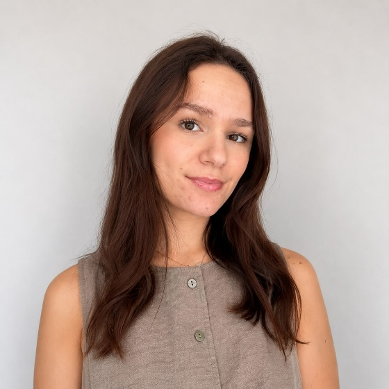
Chi sono
Mi chiamo Vittoria Rossoni e sono una psicologa dell'età evolutiva, iscritta all’albo A dell’Ordine degli Psicologi della Lombardia.
Il mio interesse per il mondo dello sviluppo e delle neurodivergenze mi ha portata a formarmi nell'ambito della neuropsicologia dell'età evolutiva, attraverso un tirocinio specialistico e un master di approfondimento.
Nel corso degli anni ho maturato esperienza anche in ambito educativo, lavorando come assistente educatrice nelle scuole e come educatrice di comunità.
Queste esperienze mi hanno permesso di conoscere da vicino i bisogni di bambini, ragazzi e delle loro famiglie, integrando lo sguardo psicologico con quello educativo.
Formazione

Laurea triennale in
presso l’Università degli Studi di Milano-Bicocca
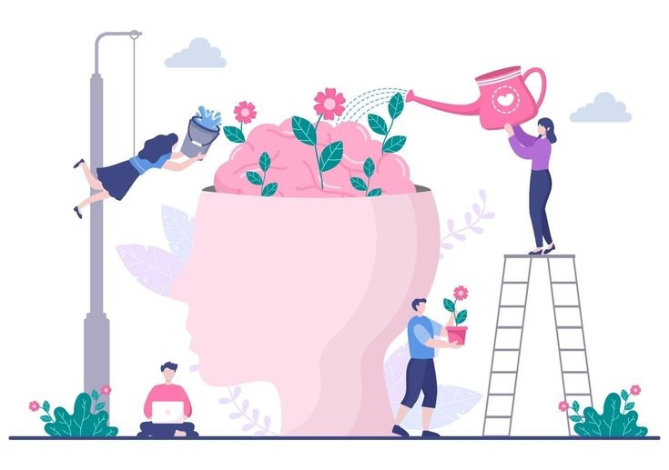
Laurea magistrale in
presso l’Università degli Studi di Milano-Bicocca
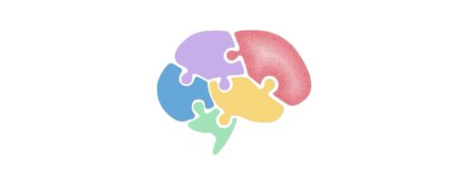
Master di II livello in
presso l’Università Cattolica del Sacro Cuore di Milano
Servizi
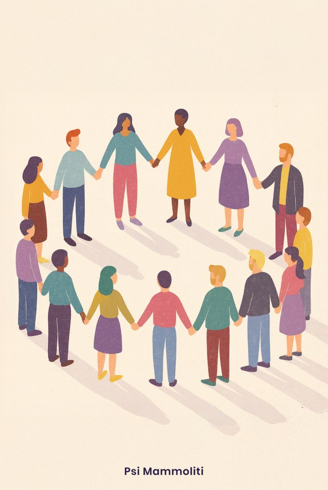
AREA 02
Un percorso di sostegno per bambini e adolescenti, pensato per accompagnare il proprio percorso di crescita e affrontare difficoltà emotive, comportamentali e relazionali.
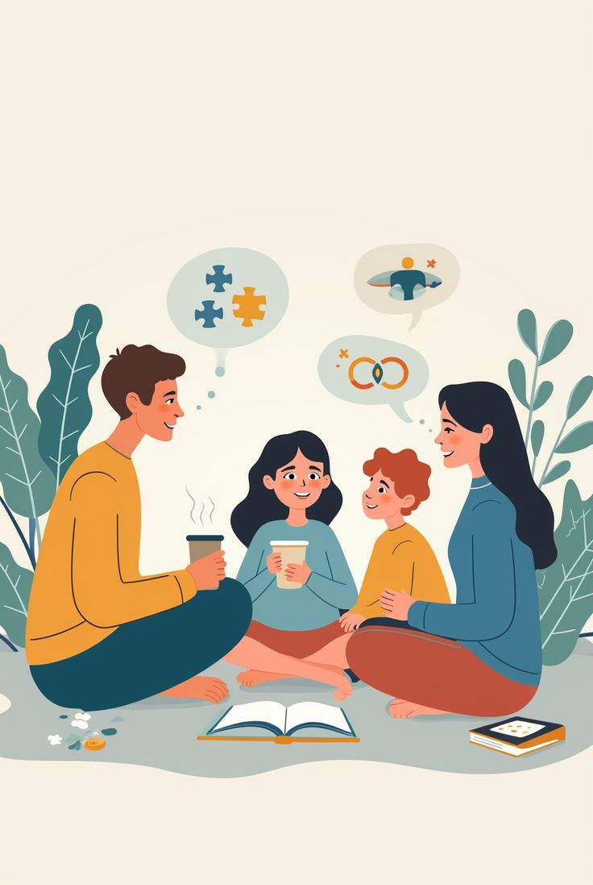
Genitorialità
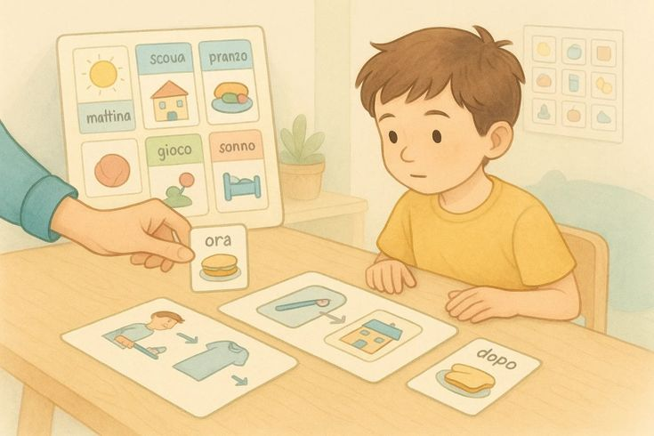
Quando può essere utile rivolgersi a uno psicologo dell’età evolutiva?
Come funziona il percorso
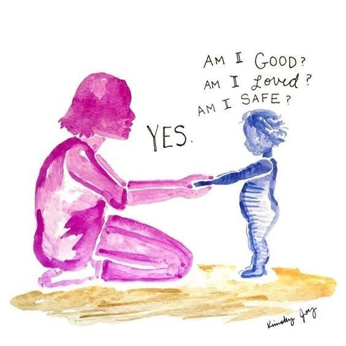
Fondamentale per accogliere e orientare la richiesta di consulenza
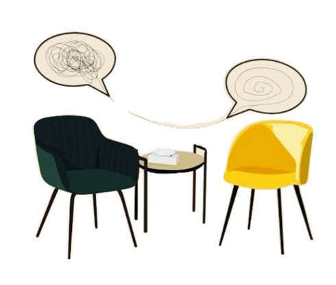
La prima consulenza consiste in un colloquio dedicato ai genitori, e ha l’obiettivo di capire e analizzare insieme il quadro e fornire alcune prime direzioni operative. Può concludersi in alcuni incontri o rappresentare l’inizio di un percorso valutativo di approfondimento
L’obiettivo della valutazione è fornire una chiave di lettura.
In base al tipo di richiesta vengono effettuati colloqui, osservazioni individuali, di gruppo o familiari, somministrati test e questionari.
La valutazione prevede l’analisi e l’integrazione di diverse informazioni provenienti dalle sedute osservative e dai contesti di vita del bambino.
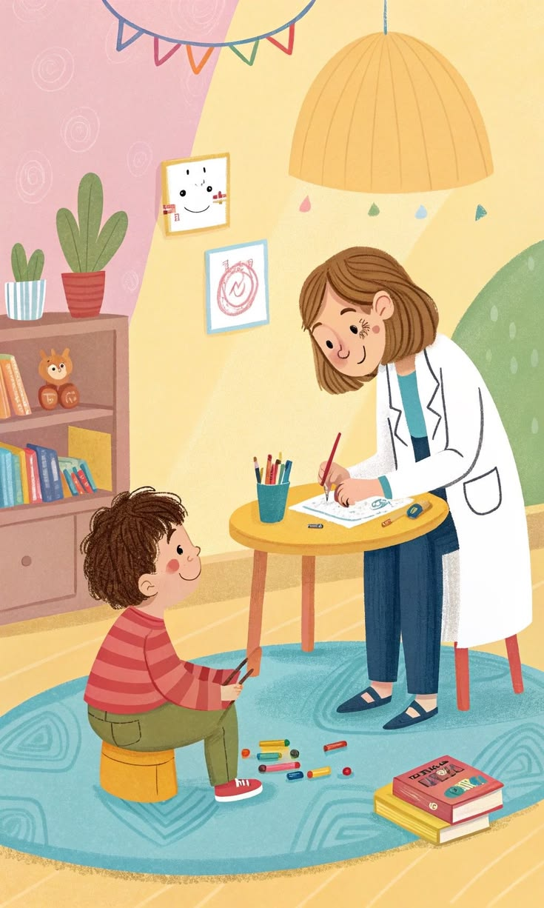
I risultati della valutazione vengono condivisi con i genitori in un colloquio finale di restituzione durante il quale si descrive il quadro complessivo e si propongono alcune strategie per affrontare la situazione.
Contatti
Per informazioni o per fissare un primo colloquio puoi compilare il modulo o scrivere una mail
Via dei Mille 22
24047 Treviglio (BG)
Consulenze e colloqui da remoto.
Vittoria Rossoni